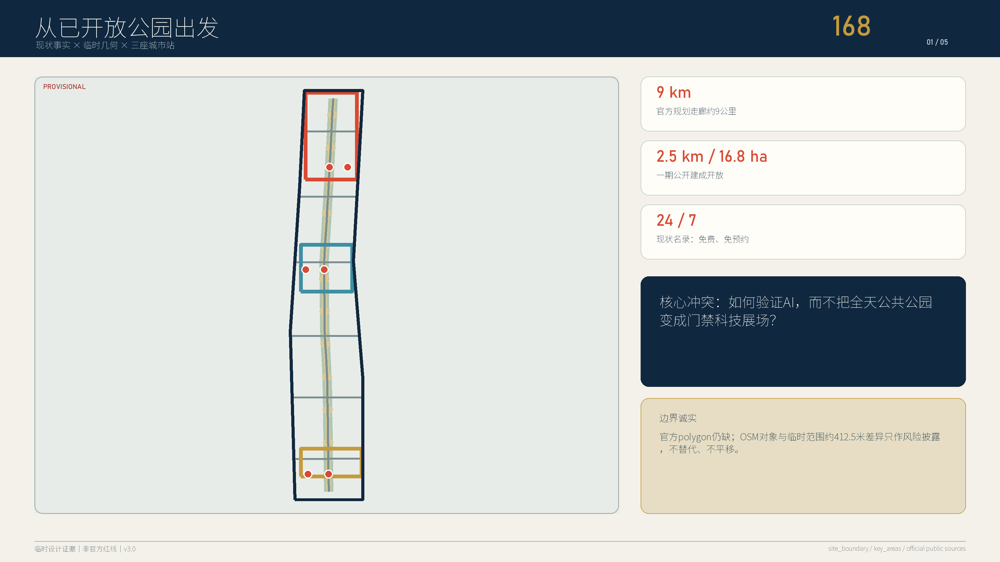
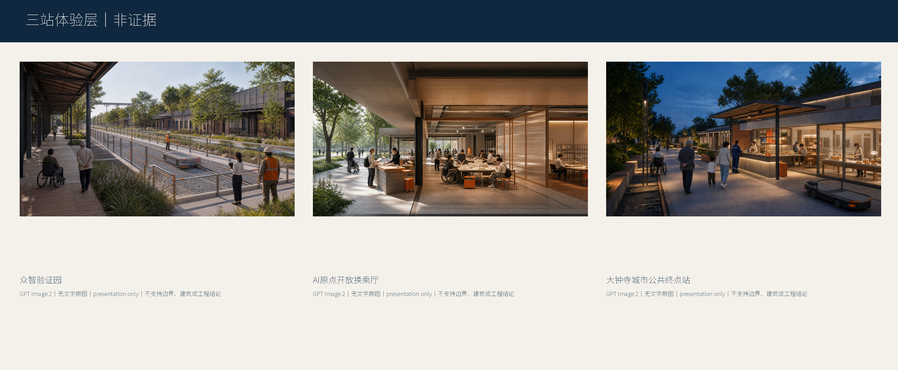
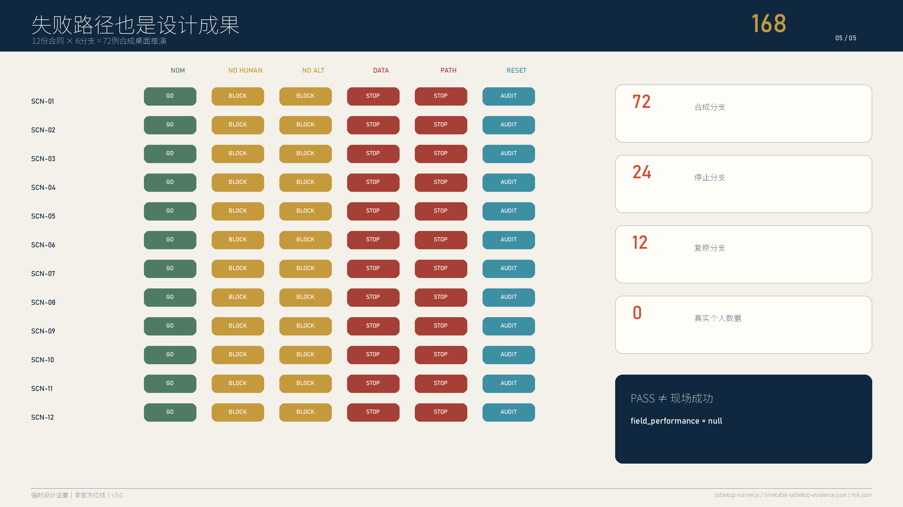

JINGZHANG 168 / v3.0 / PROVISIONAL
城市公共时刻表
公园全天开放，AI按表到站；服务晚点可见，失效有人接管，停运不堵公共路径。
9 km官方规划走廊约长
2.5 km / 16.8 ha一期公开建成开放
24 / 7现状公园免费、免预约
72合成桌面分支；现场绩效null

唯一宪法
Layer 0公共底盘不可关闭；Layer 1 AI服务可暂停、归还、审计。
HUMANNON-AISTOPRESET三座城市站，不是三座AI展馆
01
众智验证园
公共观察边—限时测试场—隔离后勤
02
AI原点开放换乘厅
无账号前台—翻译工坊—受控后室
03
大钟寺城市公共终点站
全天首层—有人柜台—合成沙盒


可定位审查证据
总览地图、重点区域、交通慢行、建筑、更新项目与来源都在下列稳定定位码下回指机器资产；compliance_matrix 的 visual_sections 只使用这些可见码。
V3-BASELINE-CONTEXT现状公园与不可关闭公共底盘V3-SPATIAL-SYSTEM一带、三站、六缝与七构件V3-STATION-PROTOTYPES三座差异化城市站剖面V3-SERVICE-CONTRACTS十二项可停运服务合同V3-FIRST-168H首个168小时九阶段V3-TABLETOP-RECEIPTS72分支合成桌面回执V3-GOVERNANCE-RIGHTS三权分离与非参与者权利V3-IMPLEMENTATION-GATES项目成熟度与场景准入双闸门V3-METRIC-BOUNDARY合同覆盖与现场绩效分离V3-RISK-REGISTER八维风险、触发与人工复核V3-HERITAGE-PUBLIC-SPACE京张历史、公共空间与全天通行V3-SOURCE-RIGHTS来源、版权与生成边界